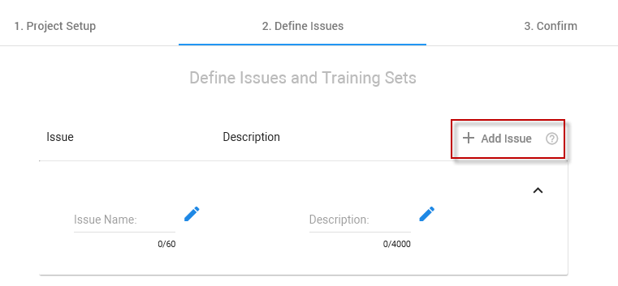
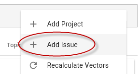
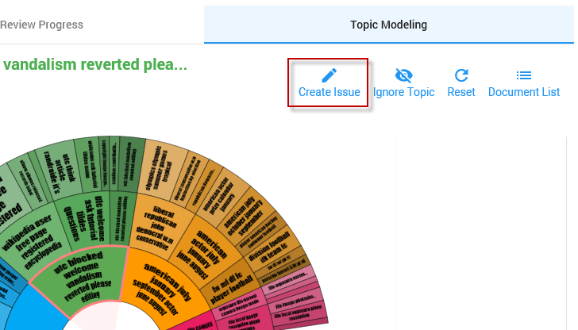
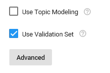
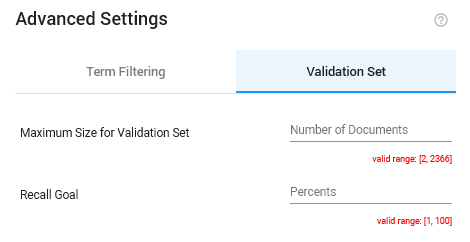

Assisted Review Glossary
Classifier
The (binary) classifier is a learning algorithm that is used to label documents as being responsive or not responsive for an issue.
Ranking
The classifier ranks documents with a value (between 0.0 and 1.0). The higher the value, the more responsive the document is.
You can view the ranking of documents in an issue with the ranking column in Document List. The results of this ranking helps you to determine the Classifier Threshold Score.
First, select the correct ranking column:

Then, sort the column ascending or descending:

Classifier Threshold Score
The Classifier Threshold Score enables you to control which documents in an issue will be classified as responsive or not responsive (when hitting the Classify Remaining button).
Define the value of the Classifier Threshold Score based on the ranking of the classifier. Only documents with a value higher than (not equal to) the Classifier Threshold Score will be classified and put in the Classification Results (Assisted Review Results field).
The Classifier Threshold Score is set before selecting the Classify Remaining button in the Assisted Review Progress tab:

Class Imbalance
Class imbalance occurs when you have a data set in which there are only a few responsive documents (positives) and a large number of not responsive documents (negatives). Prevalence values as small as 0,1% are commonly encountered for responsive documents. This class imbalance negatively effects the performance of the classifier.
Extend Validation Set
You can extend the Validation Set in the Assisted Review Progress tab.
 You can always extend the Validation Set.
You can always extend the Validation Set.
However, remember there is only one Validation Set per project. If you extend the Validation Set for an issue, it will be extended for all issues.
Also, it is recommended to review the Validation Set completely before extending it. When to extend the Validation Set?
Extend the Validation Set when the size of the Validation Set is not sufficient; There are not enough random documents to make a good estimation of the number of responsive documents in the project. If this is the case, you can see a warning icon next to the Estimated Current Recall:

With how many documents will the Validation Set be extended?
The size of the Validation Set will be extended with 10% of the current Validation Set (with a minimum of 50 documents). So for a Validation Set of a 1000 documents, the extension is 100 documents. Click Extend Set again to add another 10%.
Issue
An issue defines the information need. For example, you want to find information on contracts or human resources. For each issue, a training set is created.
All issues are listed in the Assisted Review Progress tab. Here you can view, per issue, the Statistics and Graphs (the results of the Training Set and Validation Set and the status of the Training Batch and Validation Set. You can also view the Gain Curve, the Precision of Return Set and the Precision by Recall graph).
In ZyLAB Assisted Review, you have three options to add an issue:
-
During creation of a project, in step 2 (Define Issues) of the project wizard.

-
After creation of a project, via Project Actions
 on the Assisted Review start page:
on the Assisted Review start page:

-
After creation of a project with Topic Modeling, via the Topic Modeling tab:

New Training Batch
When a new training batch for an issue is added, a new training round/iteration is started.
Each time a new training batch is added to an issue, the training batch in ZyLAB One will be refreshed. Reviewers will only see the new documents. The documents that have been reviewed in previous batches remain in the project (together they form the training set) and you will be able to find them, but they will not be part of the training batch reviewers are currently working on.
A training batch can be divided in several review (sub-)batches.
Add New Training Batch When...
-
The Recall Goal is not reached yet.
The Recall Goal is set when defining a project with a Validation Set.
In the Assisted Review Progress tab, monitor if the Recall Goal is reached or nearly reached (Estimated Current Recall):

-
The marginal precision is between 10% and 80% (0,1 and 0,8).
The marginal precision (the precision of the last reviewed training batch added to the training set, also called the return set) usually rises to a high value (for example, 67%) in the beginning of the process.
View the marginal precision in the
Precision of Return Set graph.
-
The Gain Curve has not reached its plateau yet.
- The curve of the Precision by Recall graph has not reached the desired precision and recall yet, or there is still improvement.
- Precision and recall are both below the values that were agreed earlier (for example, during meet-and-confer sessions).
Ranking
Ranking is the document score or relevance score per document. This score is calculated per issue for all documents in the project. The higher the score (ranging from 0.1 to 1.0), the more responsive the document is for a specific issue. For each new training batch, the relevance score is recalculated and documents with the highest ranking are added to the batch.
In the Document List, you can sort the documents according to this ranking or relevance score:
-
First, add the ranking field of the issue:

- Then, sort on this field:

Recall Goal
The Recall Goal is the user-defined goal (stop condition). It is the desired amount (percentage) of responsive documents you want to find in the whole project.
Define the Recall Goal
-
Create a project in Assisted Review with a Validation Set.

- Click the Advanced button and select the Validation Set tab.
- Define the desired percentage you want the classifier to achieve.

Review Batch
A review batch is a subset of a training batch or Validation Set, when working with Assisted Review.
However, review batches can also be created when reviewing a large number of documents without Assisted Review. Instead of reviewing one large list of documents, the documents are divided into easier to handle workloads.
When you have a large training batch, Validation Set or document list, it is recommended to create review batches for multiple reviewers.
Learn more, see how to create Review Batches.
Statistics and Graphs
View the statistics and graphs for each issue in the
Assisted Review Progress tab. With the help of the statistics and graphs, you decide if you want to create a new training batch or start with classifying the remaining documents (which means that you have reached a stop condition).
Statistics Calculations
Graphs Explained
To view the graphs, click (in the bottom left corner of an issue) 
Stop Condition
The stop condition defines when reviewers can stop reviewing new documents and the iterative Assisted Review process is terminated. No new training batches will be added. You can select Classify Remaining (if not all documents have been reviewed already). The last trained classifier is used to classify the remaining documents.
Several stop conditions can apply. It depends on your project when to stop.
Stop Conditions
-
The Recall Goal is reached.
The Recall Goal is set when defining a project with a Validation Set.
In the Assisted Review Progress tab, monitor if the Recall Goal is reached or nearly reached (Estimated Current Recall):
-
The marginal precision is below 10% (0,1) or higher than 80% (0,8).
The marginal precision (the precision of the last reviewed
training batch added to the training set, also called the return set) usually rises to a high value (for example, 67%) in the beginning of the process.
View the marginal precision in the
Precision of Return Set graph.
-
The Gain Curve has reached its plateau.
If the gain curve reaches a plateau, enough iterations/training batches are done. The Assisted Review process can be stopped. - The curve of the Precision by Recall graph reaches a high precision and recall (0,8 or higher), or it is not improving anymore.
- Precision and recall have both reached the values that were agreed earlier (for example, during meet-and-confer sessions).
Training Set/Batch
A training set contains all reviewed documents in a project. The training set is used to train the classifier.
A training batch is a selection of documents that might be responsive. All reviewed training batches are part of the training set. A training batch can also be called the return set.
The first or initial training set of an issue is the first reviewed training batch. With each iteration (new training batch), the training set grows as more reviewed documents are added to your first training set. A training set is made up of one or more reviewed training batches.
All training batches are available for review in ZyLAB ONE. Reviewers select a training batch (or a subset of the training batch; the review batch) and tag the documents as responsive or not responsive.
Based on their choices, the Assisted Review classifier is trained. The results of the training (the Statistics and Graphs) can be viewed in the Assisted Review Progress tab in Assisted Review.
With each new training round, a new training batch will be created for an issue. The previous training batch will not be available anymore via the Facet View, but you can still search all documents that were reviewed.
Note: A training batch in ZyLAB ONE is an issue in Assisted Review (see images below for the issue 'blocked'). The training batch of an issue in Facet View is preceded by the Project Name.
An issue in Assisted Review - Assisted Review Progress tab:

A training batch of an issue in ZyLAB ONE - Facet View: